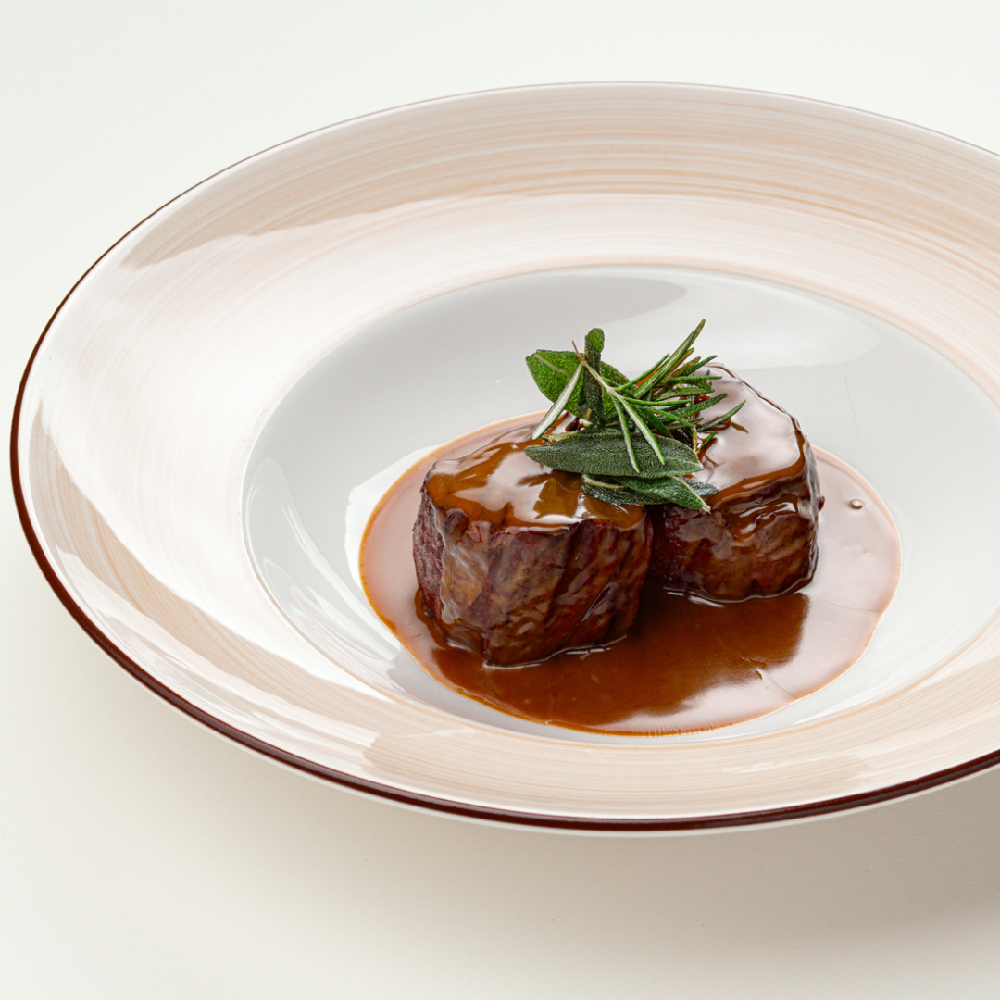
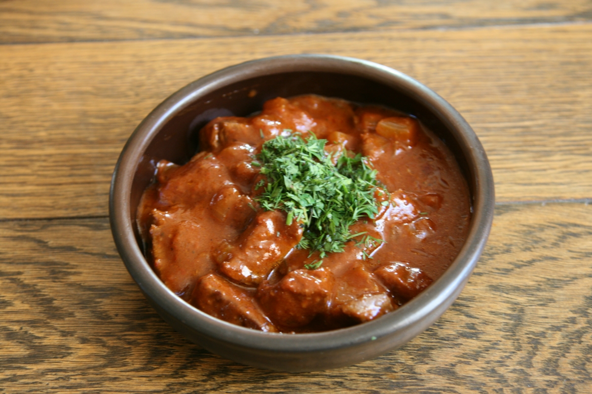
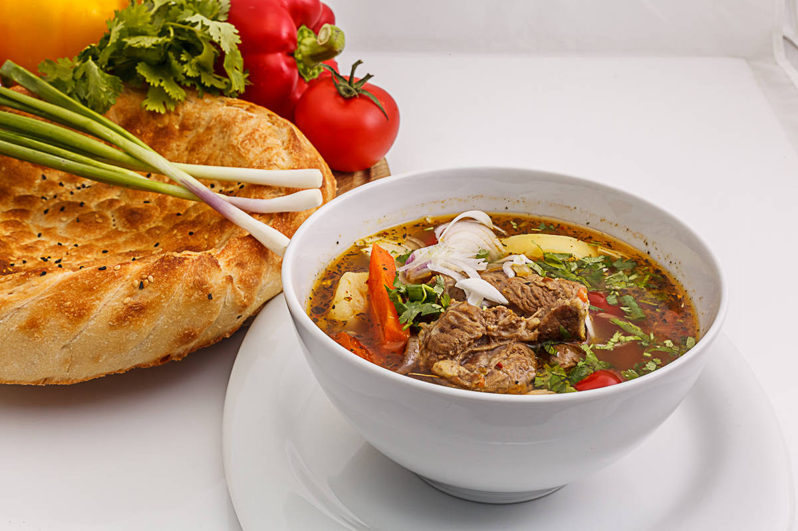

Наши блюда

Блюдо 1
Медальоны из говядины — классическое блюдо, которое сочетает в себе нежность мяса и насыщенный вкус. Готовятся они быстро и просто, что делает их идеальным выбором как для повседневного ужина, так и для праздничного стола

Блюдо 2
Лилибж — жаркое, популярное в Адыгее. Готовят его из баранины или говядины с минимальным набором специй и овощных добавок. Из овощей обычно используют только лук, а из приправ — адыгейскую соль.

Блюдо 3
Шурпа — заправочный суп или мясной бульон, распространённый в кухнях тюркских народов и таджиков. Название происходит от арабского слова «шорба», которое переводится как «суп»..